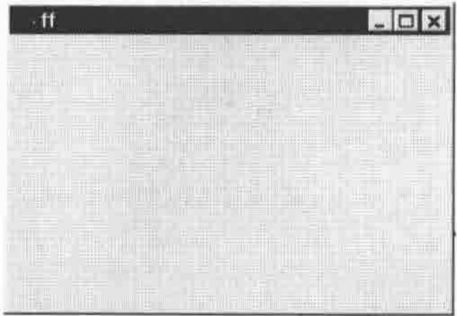
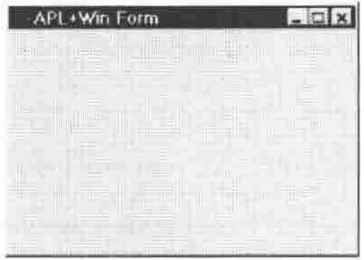
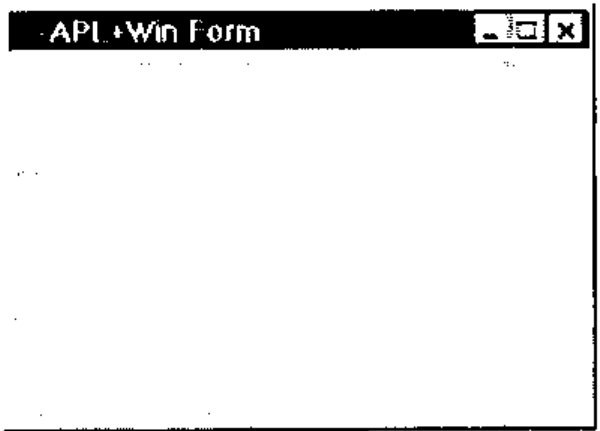
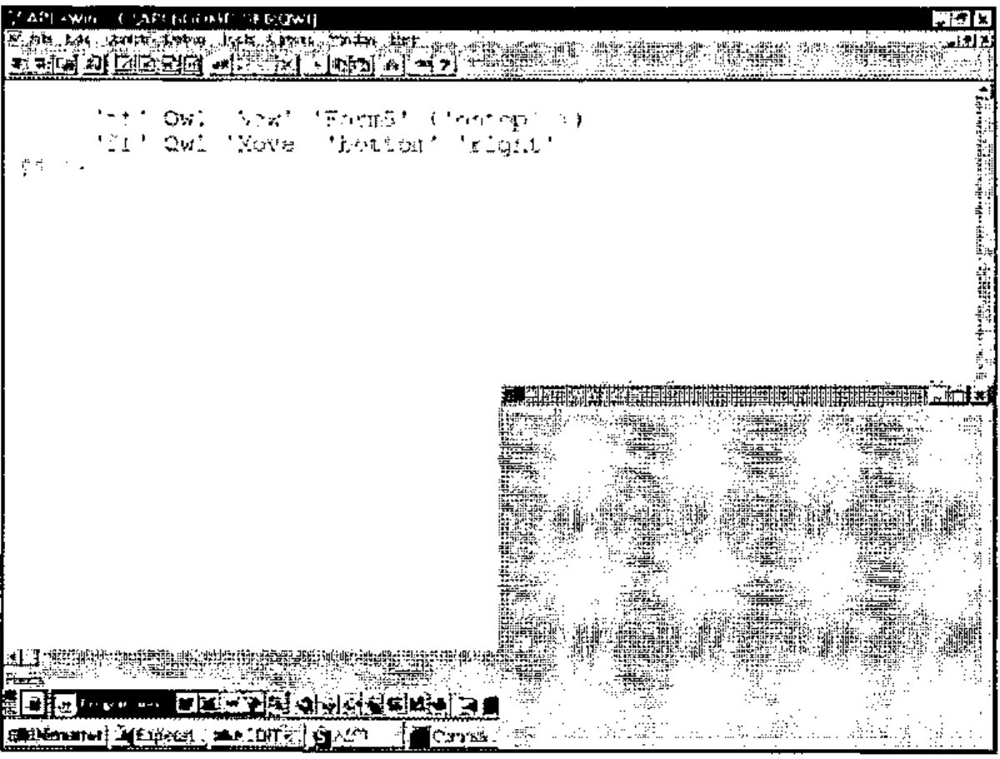

Object Oriented Programming with APL+Win (Part I)
Vector 14:1, page 106
Transcribed from the printed issue; not yet reviewed. Read it in the PDF of the issue, page 106
I want to thank Chris Lee from Softmed who inspired me with his UDC (User Defined Classes) concept.
Introduction¶
This long article, to be published in Vector in 2 parts, is extracted from the Monthly APL+Win Training Program available on the Internet from the Lescasse Consulting Web site at www.lescasse.com. It represents one of 3 chapters included in the APL+Win Training for May 97.
The article will show how a few simple APL utilities can be created to allow real Object Oriented Programming in APL+Win. It will both demonstrate how these utilities can be progressively built and introduce various Object Oriented concepts like Encapsulation, Inheritance, Polymorphism, Methods Overloading, etc. It will also show how you can create new classes of objects which inherit from the standard APL+Win Windows Interface objects or can inherit from each other, allowing you to build a complete hierarchy of new objects.
Object Oriented Programming with APL can be quite pure and much simpler than you may think. Read on.
The Source Idea¶
The original idea is as follows: APL+Win offers us a limited set of built-in objects which we programmers can easily manipulate with one system function: ⎕WI. With ⎕WI, we can query or set object properties, event handlers and invoke object methods.
If we create our own new objects for use in APL+Win, we will not be able to use the ⎕WI system function to manipulate them since they will not be known to the APL+Win system itself. However, we can create a utility which would behave exactly like ⎕WI and would allow us to work with our own objects "as if" they were built into the APL+Win system. A good name for this utility would be Qwi.
This being so, using Qwi we can resolutely adopt a pure Object Oriented style of programming and benefit from encapsulation, inheritance, polymorphism and methods overloading!
But, first let’s think a little more about what exactly is an object.
Objects¶
An object is something which exists and has a particular set of properties and behaviour. An APL+Win object is something which exists and has a particular set of properties and methods. A car for example is a real-life object: it has a colour, a weight, a size, a maximum speed and average mileage per gallon which all are properties. It also knows how to start its engine when you turn the ignition key.
An APL+Win button is an APL+Win object: it has a colour, a size, a caption which all are properties; it also knows how to hide itself when you invoke its Hide method. A car has a Start method: somebody has built some mechanism within the car so that it understands the Start method (=turning the ignition key on) and reacts to it by starting the engine.
The APL+Win button has a Hide method: somebody has built some computer code within the button so that it understands the Hide method and reacts to it by hiding itself. The important thing to understand is the following:
- as a car user, you are not concerned about how mechanics work inside the car to start the engine when you turn the ignition key on: all you need to know is that it works the way you expect and also that it always reacts in the exact same way in the future
- as an APL+Win application user, you are not concerned about the C code which hides the button when you invoke its Hide method: all you need to know is that it works the way you expect and that it will always do so.
In other words, objects are "black boxes" with a well defined consistent built-in behaviour. Once the object has been made and is tested, you will never need to look inside it again: it will always behave according to the laws built into it. From the outside, all you can do, at any time, is:
- change some of its properties (you can repaint the car another colour)
- invoke any of its methods (turn the ignition key for example)
The key point is that a well-defined and well-built object will faithfully serve us forever (or almost: as you know it’s not really the case as far as cars are concerned, unfortunately!).
On top of all this, we will programming in such a way that an APL+Win object will really be an APL+Win function (when you think about it, any software object always ultimately ends up being computer code anyway!). Functions are one of the easiest things to manipulate in APL and you may be surprised to see how easy it is to use Object Oriented Programming in APL+Win.
The Rewards of Creating New APL+Win Objects¶
In this chapter we will be extending the power of APL+Win by creating several new APL+Win objects — and we will be able to use and reuse these objects forever! Through these few examples, you will quickly see how some very simple new objects can save us a lot of time and effort, as well as make our programs much more secure and our applications much more consistent.
The rewards can be tremendous! But of course we have to pay a price for it (nothing is ever free!). It will cost us quite a lot of thinking and design to build our objects, perfect as we want them. They have to be totally secure so we will need to test them thoroughly. It will also cost us a small performance degradation. This is because we will not be able to avoid adding an APL code layer above ⎕WI in order to work with our own object properties and methods. But we will try to keep this code layer as minimal as possible.
The First Building Block: the Qwi Function¶
The key to our new Object Oriented approach to APL+Win programming is the Qwi utility. We want it to accept any of the following possible syntax:
⎕wself←'object_name' Qwi 'New' 'class_name'
⎕wself←'object_name' Qwi 'New' 'class_name' ('prop1' value1) ... ('propN'
valueN)
res← ['object_name'] Qwi 'prop'
['object_name'] Qwi 'prop' value
['object_name'] Qwi ('prop1' value1)...('propN' valueN)
res← ['object_name'] Qwi 'Get_Method' [arguments]
['object_name'] Qwi 'Set_Method' [arguments]
where:
object_name |
is a user defined object name |
class_name |
is the new object class name |
prop, prop1, ... , propN |
are object property names |
value, value1, ... , valueN |
are property values (character or numeric) |
Get_Method |
is a method which returns some values |
Set_Method |
is a method which sets some values |
arguments |
is a single argument or a nested vector of arguments |
[ ] |
denote optional elements |
As you can see the Qwi syntax is very similar to the ⎕WI syntax. You choose the class name of the new class you want to create: new class names can be identical to existing APL+Win built-in class names. Qwi will distinguish between the two:
But, since this new Form class is yours, you can make it work as you want. Let’s take an example and we will explain the Qwi utility later in this chapter.
The Second Building Block: the Class Function¶
What will our new class of objects be represented by? As already mentioned, it will indeed and not surprisingly be represented by an APL function. This APL function name will also be the class name of our new class of objects. That’s why I am calling it the class function.
Here is a very simple function which can serve as a model for building new objects for APL+Win. I have voluntarily simplified the first version to make things clearer. We will complement it later on.
∇ A QwiNewClass B;C;D;R;class;⎕io
[1] ⍝∇ A QwiNewClass B -- Template class function
[2] ⍝∇ A ↔ object name
[3] ⍝∇ B ↔ ⊂'property'
[4] ⍝∇ or 'property' value
[5] ⍝∇ or ⊂'Method'
[6] ⍝∇ or 'Method' argument1 ... argumentN
[7] ⍝∇ Requires: (F) QwiRegister
[8] ⍝∇ Copyright (c) 1997 Eric Lescasse [8mar97]
[9]
[10] ⎕io←1 ⍝ environment
[11] C←↑B ⍝ property or method
[12] D←1↓B ⍝ arguments or value
[13]
[14] :select C
[15]
[16] :case 'New' ⍝ constructor
[17] ⍝ Add code here to create an instance of the class
[18] ⍝ Example:
[19] ⍝ R←A ⎕wi 'New' 'Form' 'Hide' ⍝ create a Form object
[20] '#'⎕wi'∆wres' R ⍝ result returned in ∆wres property
[21] QwiRegister A ⍝ register new class name
[22]
[23] :case 'Close' ⍝ close object
[24]
[25] :case 'Destroy' ⍝ destructor
[26]
[27] :end
∇
The function comments describe the function arguments.
On line 11 the property or method name is extracted from the right argument.
On line 12 the property value or the method argument(s) if any, are retrieved from the right argument into D.
Then a simple :select :case :case :end control structure allows us to branch to various parts of the program depending on the property or method name used.
Note that all new objects will have a New method which we call the constructor method and that they will often have a Close method and a Destroy method which we call the destructor method: that’s why we have already hard coded these special cases into our template new object function.
Note also that you should never remove the class local variable from a class function, even if it is not used in the function code. This local variable will help the QwiClasses utility find all user defined objects in the workspace: we will see that later in this chapter.
Finally, there is one subroutine called on line 21: QwiRegister, whose role is to register the new class of objects. We will comment on it later, but let’s simply know for now that registering the new class consists of saving the object class name in the object ∆class user-defined data property.
When defining a new object we will:
- edit the QwiNewClass function
- change its name to some meaningful object class name
- write custom code for the New and possibly for the Close and Destroy methods
- add other properties or methods
Now that you have been quickly introduced to the basic blocks, let’s take an example.
A New Class of APL+Win Forms¶
When you make some trials in your APL session, building forms with ⎕WI, you might be tired of having to first delete an existing form before you can recreate it.
Example (assuming you already have an ff form object):
'ff' ⎕wi 'New' 'Form'
⎕WI OBJECT ERROR: Object already exists
'ff' ⎕wi 'New' 'Form'
^
'ff' ⎕wi 'Delete'
'ff' ⎕wi 'New' 'Form'
ff
So, let’s create a new APL+Win Form object, which will know how to delete itself before it is recreated.
Here is a first attempt at this new Form1 class:
∇ A Form1 B;C;R;class
[1] ⍝∇ A Form1 B -- User Defined Form1 Class
[2] ⍝∇ A ↔ object name
[3] ⍝∇ B ↔ 'property'
[4] ⍝∇ or 'property' value
[5] ⍝∇ or 'Method'
[6] ⍝∇ or 'Method' argument1 ... argumentN
[7] ⍝∇ Requires: (F) QwiRegister
[8] ⍝∇ Copyright (c) 1997 Eric Lescasse [8mar97]
[9]
[10] C←↑B ⍝ property or method
[11]
[12] :select C
[13]
[14] :case 'New' ⍝ constructor
[15] A ⎕wi'Delete' ⍝ delete existing form
[16] R←A ⎕wi 'New' 'Form' ⍝ create form
[17] '#'⎕wi'∆wres' R ⍝ result returned in ∆wres property
[18] QwiRegister A ⍝ register class name
[19]
[20] :end
∇
The above Form1 function represents our new Form1 class of objects. These objects distinguish themselves from standard APL+Win forms by being able to first destroy themselves before being recreated. The Form1 function is a modified copy of the QwiNewClass template function where we have removed all unnecessary code. Our first example, the Form1 class is a very simple new class. But it can already save us a lot of keystrokes every day.
Let’s use this new class:

Well! Let’s try to recreate the form:
As you see this works well, without producing the traditional ⎕WI OBJECT ERROR: Object already exists error message.
If you look at the Form1 function you see that our new Form1 class is the same as a standard APL+Win form class (R←A ⎕wi'New' 'Form' on line 16) except that its New method has been overloaded with an additional instruction (A ⎕wi'Delete' on line 15).
OK, I am sure you already have some ideas on how to improve our new user defined Form1 class.
Improving Our New Form1 Class¶
My own preference with forms, is always to work with pixel coordinates ('scale' 5). So why not build that property in, by default. I would also like to have a nicer default caption, of APL+Win form. And be sure always to use the same default font of ‘MS Sans Serif’ in size .8. Let’s make these changes to our Form1 class and rename it Form2. Here is what we get:
∇ A Form2 B;C;D;R;class;⎕io
[1] ⍝∇ A Form2 B -- User Defined Form2 Class
[2] ⍝∇ A ↔ object name
[3] ⍝∇ B ↔ 'property'
[4] ⍝∇ or 'property' value
[5] ⍝∇ or 'Method'
[6] ⍝∇ or 'Method' argument1 ... argumentN
[7] ⍝∇ Requires: (F) QwiRegister
[8] ⍝∇ Copyright (c) 1997 Eric Lescasse [8mar97]
[9]
[10] ⎕io←1 ⍝ environment
[11] C←↑B ⍝ property name or method name
[12] D←1↓B ⍝ property value or method arguments
[13]
[14] :select C
[15]
[16] :case 'New' ⍝ constructor
[17] A ⎕wi'Delete' ⍝ delete existing form
[18] R←A ⎕wi 'New' 'Form' ⍝ create form
[19] '#'⎕wi '∆wres' R ⍝ result returned in ∆wres property
[20] A ⎕wi 'caption' 'APL+Win Form' ⍝ default caption
[21] A ⎕wi 'font' 'MS Sans Serif' .8 ⍝ default font
[22] A ⎕wi 'scale' 5 ⍝ pixel coordinates
[23] QwiRegister A ⍝ register class name
[24]
[25] :end
∇
Lines 10 and 12 are not necessary for now, but will be later in this paragraph.
Let’s try this new class:

Of course, since our new form class is built over the standard APL+Win form class, we can use the standard ⎕WI system function to query or set form properties afterwards:
However, if we wanted to use our Qwi function to retrieve standard form properties, we can see that no values are returned:
or more exactly the Qwi function returns an empty matrix.
This is because our Form2 class function does not attempt to process right arguments other than those starting 'New'.
We can easily fix this problem by adding an :else clause to the :select control structure of our Form2 function and renaming it Form3, as follows:
∇ A Form3 B;C;D;R;class;⎕io
[1] ⍝∇ A Form3 B -- User Defined Form3 Class
[2] ⍝∇ A ↔ object name
[3] ⍝∇ B ↔ 'property'
[4] ⍝∇ or 'property' value
[5] ⍝∇ or 'Method'
[6] ⍝∇ or 'Method' argument1 ... argumentN
[7] ⍝∇ Requires: (F) QwiRegister
[8] ⍝∇ Copyright (c) 1997 Eric Lescasse [8mar97]
[9]
[10] ⎕io←1 ⍝ environment
[11] C←↑B ⍝ property name or method name
[12] D←1↓B ⍝ property value or method arguments
[13]
[14] :select C
[15]
[16] :case 'New' ⍝ constructor
[17] A ⎕wi'Delete' ⍝ delete existing form
[18] R←A ⎕wi 'New' 'Form' ⍝ create form
[19] '#'⎕wi '∆wres' R ⍝ result returned in ∆wres property
[20] A ⎕wi 'caption' 'APL+Win Form' ⍝ default caption
[21] A ⎕wi 'font' 'MS Sans Serif' .8 ⍝ default font
[22] A ⎕wi 'scale' 5 ⍝ pixel coordinates
[23] QwiRegister A ⍝ register class name
[24]
[25] :else ⍝ process all other props/methods
[26] :if (⊂C)∊A ⎕wi'properties' ⍝ if a standard property ...
[27] :orif (⊂C)∊A ⎕wi'methods' ⍝ or a standard method
[28] :if 0∊⍴D ⍝ when no value or arguments passed
[29] '#'⎕wi'∆wres'(A ⎕wi C) ⍝ return current value
[30] :else ⍝ else...
[31] A ⎕wi (⊂C),D ⍝ apply value or arguments
[32] :end
[33] :end
[34]
[35] :end
∇
Now, we can also use Qwi to get or set standard APL+Win form properties as well as invoke standard APL+Win form methods:
'ff' Qwi 'New' 'Form3'
ff
'ff' Qwi 'font'
MS Sans Serif 0.8 0 ansi
'ff' Qwi 'font' 'Arial' 1
'ff' ⎕wi 'font'
Arial 1 0 ansi
'ff' Qwi 'font'
Arial 1 0 ansi
('ff' ⎕wi 'font')≡'ff' Qwi 'font'
1
Therefore, please add the same :else clause to our QwiNewClass template function so that it now reads as follows:
∇ A QwiNewClass B;C;D;R;class;⎕io
[1] ⍝∇ A QwiNewClass B -- Template class function
[2] ⍝∇ A ↔ object name
[3] ⍝∇ B ↔ ⊂'property'
[4] ⍝∇ or 'property' value
[5] ⍝∇ or ⊂'Method'
[6] ⍝∇ or 'Method' argument1 ... argumentN
[7] ⍝∇ Requires: (F) QwiRegister
[8] ⍝∇ Copyright (c) 1997 Eric Lescasse [8mar97]
[9]
[10] ⎕io←1 ⍝ environment
[11] C←↑B ⍝ property name or method name
[12] D←1↓B ⍝ property value or method arguments
[13]
[14] :select C
[15]
[16] :case 'New' ⍝ constructor
[17] ⍝ Add code here to create an instance of the class
[18] ⍝ Example:
[19] ⍝ R←A ⎕wi 'New' 'Form' 'Hide' ⍝ create a Form object
[20] '#'⎕wi'∆wres' R ⍝ result returned in ∆wres property
[21] QwiRegister A ⍝ register new class name
[22]
[23] :case 'Close' ⍝ close object
[24]
[25] :case 'Destroy' ⍝ destructor
[26]
[27] :else ⍝ process all other properties/methods
[28] :if (⊂C)∊A ⎕wi'properties' ⍝ if a standard property ...
[29] :orif (⊂C)∊A ⎕wi'methods' ⍝ or a standard method
[30] :if 0∊⍴D ⍝ when no value or arguments passed
[31] '#'⎕wi'∆wres'(A ⎕wi C) ⍝ return current value
[32] :else ⍝ else
[33] A ⎕wi (⊂C),D ⍝ apply value or arguments
[34] :end
[35] :end
[36]
[37] :end
∇
Adding a Property to a User Defined Class¶
Let’s add a new property to our Form3 class and make it the Form4 class. The new property will be called ontop. Just as for any standard APL+Win object property, you must use only lower case characters for property names.
The ontop property will be either 0 or 1. If it is set to 1, then the created instance of the Form4 class will stay on top of all other forms.
We have already seen how to make a form "on top" of all other forms (see code starting at line 63 in the SystemMenu function described in Chapter 8 pp. 65-66).
Here is how we can implement the ontop property:
[25] :case 'ontop' ⍝ ontop property
[26] :if 0∊⍴D ⍝ if not property value
[27] '#' ⎕wi '∆wres' (A ⎕wi '∆ontop') ⍝ query property
[28] :else ⍝ else
[29] S←(1+1≡↑D)⊃'hwnd_notopmost' 'hwnd_topmost' ⍝ windows constant to use
[30] S←S 0 0 0 0 'swp_nomove swp_nosize' ⍝ other arguments
[31] S←⎕wcall'SetWindowPos' (A ⎕wi'hwnd'),S ⍝ call SetWindowPos
[32] A ⎕wi '∆ontop' (1≡↑D) ⍝ register property value
[33] :end
Let’s comment the above lines of code. First, whenever you implement a property, you need to process 2 kinds of cases:
- the property is queried
- the property is set
That’s why we have an :if ... :else ... :end clause above.
The key point to understand and the cleverness here is to use user-defined data properties to save our property values into the object itself. So we are using a
∆ontopuser defined data property to store our boolean ontop property value.
When we query the ontop property, the code is as simple as retrieving the current value of the ∆ontop user-defined data property (line 27) and to return it as a result.
When we set the ontop property (lines 29 to 32), we need to perform 2 different actions:
- do the required job (lines 29 to 31)
- save the new value of the ontop property in the
∆ontopuser-defined data property (line 32)
As you see it is pretty simple to implement a new property in a user-defined object. You just have to add a :case 'property' clause to your class function with the right code to query and set the property.
Let’s test our new class:

Now click into the APL session, outside the APL+Win form: as you see the APL+Win Form stays on top!
We can query the ontop property of the form:
Of course, if we tried to do it using ⎕WI we would get an error since the APL+Win system does not know about the ontop property for an APL+Win Form object:
Change the APL+Win form ontop property to 0:
Now click into the APL session outside the APL+Win Form: this time the APL+Win form is sent to the back.
Let’s now see how we can implement a new method for our form.
Adding a Method to a User Defined Class¶
Let’s create a new Form5 class starting with the Form4 class, by adding a new method to the class. We would like to be able to easily move our form out of our way so that it is moved to the top right of the screen (or to the bottom right or bottom left or top left of the screen). Likewise it would be good if this new method knew how to centre the form on the screen.
Whenever you add a new property or method to an object, you have to think carefully about the design so that the method will be simple for the developer to use. All methods should start with an uppercase letter, as do all standard APL+Win methods. Let’s call our new method Move. This method will accept 2 arguments. Each of them can be a character vector or an integer.
The 1st argument describes the vertical position of the form : it can be ‘top’ ‘bottom’ or ‘center’ or an integer denoting the percent of the vertical size of the screen where the form will be located
The 2nd argument describes the horizontal position of the form : it can be ‘left’ ‘right’ or ‘center’ or an integer denoting the percent of the horizontal size of the screen where the form will be located
So we would like to use such expressions as:
'ff' Qwi 'Move' 'top' 'right'
'ff' Qwi 'Move' 'bottom' 'left'
'ff' Qwi 'Move' 0 0
'ff' Qwi 'Move' 'center' 10
'ff' Qwi 'Move' 50 50
We will also design the Move method so that it returns the old form position in pixels. Here are the lines of code you should add to function Form4 (which we rename at the same time as Form5) in order to implement the Move method:
[25] :case 'Move'
[26] :if 2≠⍴D ⋄ :return ⋄ :end ⍝ exit if not 2 arguments
[27] (E F)←D ⍝ get method arguments
[28] G←(1+82=⎕dr E)⊃E 0 ⍝ G is 0 if 1st arg char
[29] H←(1+82=⎕dr F)⊃F 0 ⍝ H is 0 if 2nd arg char
[30] (I J)←'#'⎕wi'size' ⍝ get screen dimensions
[31] (K L M N)←A ⎕wi'where' ⍝ get form position & size
[32] '#'⎕wi'∆wres'(K L×2⍴'#'⎕wi'units') ⍝ return old form position
[33] K←(.01×0 50 100 G×I-M)['top' 'center' 'bottom'⍳⊂E] ⍝ new vert form pos
[34] L←(.01×0 50 100 H×J-N)['left' 'center' 'right'⍳⊂F] ⍝ new horz form pos
[35] A ⎕wi'where' K L M N ⍝ move form
This method is pretty simple to understand.
First, if the Move method did not receive exactly 2 arguments, we do nothing and exit (line 26).
If 2 arguments were passed to Move, as expected, we retrieve them in variables E and F (line 27).
On lines 28 and 29, we transform E and F to 0, only if they are character vectors: if E and/or F were numeric, we do not change their values. We store the new values in variables G and H.
Then we need to retrieve the screen dimension in row/col coordinates (line 30).
Then we retrieve the current form position in variables K and L and the current form size in variables M and N on line 31.
On line 32 we save the current form position in the ∆wres property (the result of our Move method).
The new form vertical position is easily calculated on line 33 and the new horizontal form position is easily calculated on line 34, which each handle all cases of arguments in just one simple instruction. A much longer alternative way of writing line 33 would for example be:
Finally the form is moved by changing its where property with the ⎕WI system function, on line 35.
Let’s try our new class:
resulting in the following screen where I have increased the APL font size so that you can read it better .

Note that we could have specified everything in just one expression:
but please note that in such a case, Qwi always returns the result of the rightmost method in the phrase.
So, after addition of the Move method, the Form5 class function is as follows:
∇ A Form5 B;C;D;E;F;G;H;I;J;K;L;M;N;R;S;class;⎕io
[1] ⍝∇ A Form5 B -- User Defined Form5 Class
[2] ⍝∇ A ↔ object name
[3] ⍝∇ B ↔ 'property'
[4] ⍝∇ or 'property' value
[5] ⍝∇ or 'Method'
[6] ⍝∇ or 'Method' argument1 ... argumentN
[7] ⍝∇ Requires: (F) QwiRegister
[8] ⍝∇ Copyright (c) 1997 Eric Lescasse [8mar97]
[9]
[10] ⎕io←1 ⍝ environment
[11] C←↑B ⍝ property name or method name
[12] D←1↓B ⍝ property value or method arguments
[13]
[14] :select C
[15]
[16] :case 'New' ⍝ constructor
[17] A ⎕wi'Delete' ⍝ delete existing form
[18] R←A ⎕wi 'New' 'Form' ⍝ create form
[19] '#'⎕wi '∆wres' R ⍝ result returned in ∆wres property
[20] A ⎕wi 'caption' 'APL+Win Form' ⍝ default caption
[21] A ⎕wi 'font' 'MS Sans Serif' .8 ⍝ default font
[22] A ⎕wi 'scale' 5 ⍝ pixel coordinates
[23] QwiRegister A ⍝ register class name
[24]
[25] :case 'Move'
[26] :if 2≠⍴D ⋄ :return ⋄ :end ⍝ exit if not 2 arguments
[27] (E F)←D ⍝ get method arguments
[28] G←(1+82=⎕dr E)⊃E 0 ⍝ G is 0 if 1st arg char
[29] H←(1+82=⎕dr F)⊃F 0 ⍝ H is 0 if 2nd arg char
[30] (I J)←'#'⎕wi'size' ⍝ get screen dimensions
[31] (K L M N)←A ⎕wi'where' ⍝ get form position & size
[32] '#'⎕wi'∆wres'(K L×2⍴'#'⎕wi'units') ⍝ return old form position
[33] K←(.01×0 50 100 G×I-M)['top' 'center' 'bottom'⍳⊂E] ⍝ new vert form pos
[34] L←(.01×0 50 100 H×J-N)['left' 'center' 'right'⍳⊂F] ⍝ new horz form pos
[35] A ⎕wi'where' K L M N ⍝ move form
[36]
[37] :case 'ontop' ⍝ ontop property
[38] :if 0∊⍴D ⍝ if not property value
[39] '#' ⎕wi '∆wres' (A ⎕wi '∆ontop') ⍝ query property
[40] :else ⍝ else
[41] S←(1+1≡↑D)⊃'hwnd_notopmost' 'hwnd_topmost' ⍝ windows constant to use
[42] S←S 0 0 0 0 'swp_nomove swp_nosize' ⍝ other arguments
[43] S←⎕wcall'SetWindowPos' (A ⎕wi'hwnd'),S ⍝ call SetWindowPos
[44] A ⎕wi '∆ontop' (1≡↑D) ⍝ register property value
[45] :end
[46]
[47] :else ⍝ process all other properties/methods
[48] :if (⊂C)∊A ⎕wi'properties' ⍝ if a standard property ...
[49] :orif (⊂C)∊A ⎕wi'methods' ⍝ or a standard method
[50] :if 0∊⍴D ⍝ when no value or arguments passed
[51] '#'⎕wi'∆wres'(A ⎕wi C) ⍝ return current value
[52] :else ⍝ else...
[53] A ⎕wi (⊂C),D ⍝ apply value or arguments
[54] :end
[55] :end
[56]
[57] :end
∇
Simplest Form of the Qwi Function¶
Qwi is the very chore of our Object Oriented approach to APL+Win development. Here is a simple first version of Qwi which is sufficient to run the examples we have shown before:
∇ R←A Qwi1 B;C;E;I
[1] ⍝∇ R←A Qwi1 B -- ⎕WI emulator
[2] ⍝∇ ⎕wself←'object_name' Qwi1 'New' 'class_name'
[3] ⍝∇ ⎕wself←'object_name' Qwi1 'New' 'class_name'('prop1' value1)...
[4] ⍝∇ res← ['object_name'] Qwi1 'prop'
[5] ⍝∇ ['object_name'] Qwi1 'prop' value
[6] ⍝∇ ['object_name'] Qwi1 ('prop1' value1)...('propN' valueN)
[7] ⍝∇ res← ['object_name'] Qwi1 'Get_Method' [arguments]
[8] ⍝∇ ['object_name'] Qwi1 'Set_Method' [arguments]
[9] ⍝∇ Copyright (c) 1997 Eric Lescasse [8mar97]
[10]
[11] :if 2≠⎕nc'A' ⋄ A←⎕wself ⋄ :end ⍝ ⎕WSELF if no left arg
[12] :if 1=≡B ⋄ B←,⊂B ⋄ :end ⍝ be sure B is nested
[13] :if 'New'≡↑B ⍝ if method is 'New'
[14] C←2⊃B ⍝ get specified class name
[15] B←(⊂'New' C),2↓B ⍝ rebuild argument
[16] :elseif 0≠⍴A ⎕wi'self' ⍝ else if object A exists
[17] C←↑A ⎕wi'∆class' ⍝ get registered class name
[18] :end
[19] :if 2=≡B ⋄ B←,⊂B ⋄ :end ⍝ ensure B depth is ≥ 3
[20] E←2>≡¨B ⋄ (E/B)←⊂¨E/B ⍝ ensure each element is of depth 2
[21] B←,B ⋄ '#'⎕wi'∆wres'(0 0⍴0) ⍝ define default result
[22] :for I :in ⍳⍴B ⍝ for each element in argument
[23] ⍎'A ',C,' I⊃B' ⍝ execute the class function
[24] :end
[25] R←'#'⎕wi'∆wres' ⍝ return result saved in ∆wres
∇
On line 11, we set the left argument A to ⎕WSELF if it has been omitted. Then, from line 12 to line 20 we normalize the right argument B so that it has a normalized depth 3 structure. For example, arguments such as:
are changed to:
]display ,⊂,⊂'ontop'
┌→──────────┐
│┌→───────┐ │
││┌→────┐ │ │
│││ontop│ │ │
││└─────┘ │ │
│└∊───────┘ │
└∊──────────┘
while arguments such as:
are changed to:
]display ,⊂'ontop' 1
┌→────────────┐
│┌→─────────┐ │
││┌→────┐ │ │
│││ontop│ 1 │ │
││└─────┘ │ │
│└∊─────────┘ │
└∊────────────┘
and finally arguments such as:
]display 'New' 'Form4'('ontop' 1)'SetDefaultColor'
┌→────────────────────────────────────────────┐
│┌→──┐ ┌→────┐ ┌→─────────┐ ┌→──────────────┐ │
││New│ │Form4│ │┌→────┐ │ │SetDefaultColor│ │
│└───┘ └─────┘ ││ontop│ 1 │ └───────────────┘ │
│ │└─────┘ │ │
│ └∊─────────┘ │
└∊────────────────────────────────────────────┘
are changed to:
]display ('New' 'Form4')('ontop' 1)(⊂'SetDefaultColor')
┌→──────────────────────────────────────────────────┐
│┌→─────────────┐ ┌→─────────┐ ┌→─────────────────┐ │
││┌→──┐ ┌→────┐ │ │┌→────┐ │ │┌→──────────────┐ │ │
│││New│ │Form4│ │ ││ontop│ 1 │ ││SetDefaultColor│ │ │
││└───┘ └─────┘ │ │└─────┘ │ │└───────────────┘ │ │
│└∊─────────────┘ └∊─────────┘ └∊─────────────────┘ │
└∊──────────────────────────────────────────────────┘
Finally, arguments such as:
]display ('ontop' 1) ('Move' 10 10)
┌→────────────────────────────┐
│┌→─────────┐ ┌→────────────┐ │
││┌→────┐ │ │┌→───┐ │ │
│││ontop│ 1 │ ││Move│ 10 10 │ │
││└─────┘ │ │└────┘ │ │
│└∊─────────┘ └∊────────────┘ │
└∊────────────────────────────┘
already have the right structure and are left unchanged.
Lines 12 to 20 have a second role: they also are used to find out what is the object class name.
If we are constructing an instance of a new object (i.e. if the New method was invoked in the Qwi1 right argument), then the second element of the Qwi1 right argument is the class name (line 14).
If method New was not invoked, that means we are attempting to work on an existing instance of the class and in that case, the class name has been saved in this instance ∆class user-defined data property (line 17).
On line 20 we set the system object ∆wres user-defined data property to a default empty matrix value. This property will get any result that the class function needs to return.
Then a simple :for loop allows us to process each element of the normalized Qwi1 right argument, one at a time.
For example, if we called:
the right argument is first normalized to be: ('New' 'Form5') ('ontop' 1) and the :for loop is performed twice.
The 1st time it executes the following expression:
and the second time it executes:
where Form5 is our class function.
Finally on line 25, any value saved in the ∆wres system object property is retrieved and returned by Qwi1. Since each call of Form5 might have saved a result value into ∆wres, Qwi1 only returns the last one saved in ∆wres.
This should not be a limitation since you can always decide to cut your Qwi1 instruction into several Qwi1 instructions in order to get all results.
For example:
and we get only the result of the Move method, losing the result of the New method. If we needed both results, we could always write:
Adding Error Handling to Qwi1¶
If you do a lot of trials from the APL session and make typos you may mis-spell the class name when creating a new instance of an object.
In that case you may have seen that you get the following error:
It would be much nicer to exit cleanly from Qwi1, signalling an error to the user, as in:
There are 2 ways we could achieve this:
- first, we could add an APL test just before the
:forloop to check if we do have a class function of the right name (here Test) available in the workspace - second, we could rely on error handling to trap a
VALUE ERRORon line 23
I am choosing to show you the second approach, since you all know how to perform the first, since the second approach has faster execution, and finally since it is another opportunity to use the remarkable HANDLERFOR utility which we already introduced in Chapter 9 (Error Handling).
In order to add error handling to our Qwi1 function, we need to do 3 things:
- localize
⎕ELX - set
⎕ELXto'⍎HANDLERFOR ⎕DM'at the beginning of our Qwi1 function - add an error handling comment on the line which could fail with
VALUE ERROR(line 23)
Line 23 should become:
If no error occurs when line 23 executes, our error handling comment will consume no CPU time. But if a VALUE ERROR occurs, the expression following the colon in our error handler will automatically execute and an error will cleanly be signalled to the calling environment.
Example:
To finish with error handling, we could add a couple of other tests to signal errors to the calling environment. The Qwi1 function, dressed with error handling is renamed Qwi2 is:
∇ R←A Qwi2 B;C;E;I;⎕elx
[1] ⍝∇ R←A Qwi2 B -- ⎕WI emulator
[2] ⍝∇ ⎕wself←'object_name' Qwi2 'New' 'class_name'
[3] ⍝∇ ⎕wself←'object_name' Qwi2 'New' 'class_name'('prop1' value1)...
[4] ⍝∇ res← ['object_name'] Qwi2 'prop'
[5] ⍝∇ ['object_name'] Qwi2 'prop' value
[6] ⍝∇ ['object_name'] Qwi2 ('prop1' value1)...('propN' valueN)
[7] ⍝∇ res← ['object_name'] Qwi2 'Get_Method' [arguments]
[8] ⍝∇ ['object_name'] Qwi2 'Set_Method' [arguments]
[9] ⍝∇ Copyright (c) 1997 Eric Lescasse [8mar97]
[10]
[11] ⎕elx←'⍎HANDLERFOR ⎕DM'
[12] :if 2≠⎕nc'A' ⋄ A←⎕wself ⋄ :end ⍝ ⎕WSELF if no left arg
[13] :if 1=≡B ⋄ B←,⊂B ⋄ :end ⍝ be sure B is nested
[14] :if 'New'≡↑B ⍝ if method is 'New'
[15] C←2⊃B ⍝ get specified class name
[16] B←(⊂'New' C),2↓B ⍝ rebuild argument
[17] :elseif 0≠⍴A ⎕wi'self' ⍝ else if object A exists
[18] :if 0=C←↑A ⎕wi'∆class' ⍝ get registered class name
[19] ⎕error'Use ⎕WI instead of Qwi2' ⍝ if none signal error
[20] :end
[21] :else ⍝ if not 'New' & not an object
[22] ⎕error'Unknown object: ',A ⍝ signal error
[23] :end
[24] :if 2=≡B ⋄ B←,⊂B ⋄ :end ⍝ ensure B depth is ≥ 3
[25] E←2>≡¨B ⋄ (E/B)←⊂¨E/B ⍝ ensure each element is of depth 2
[26] B←,B ⋄ '#'⎕wi'∆wres'(0 0⍴0) ⍝ define default result
[27] :for I :in ⍳⍴B ⍝ for each element in argument
[28] ⍎'A ',C,' I⊃B' ⍝∇{VALUE:⎕error'Unknown class: ',C}
[29] :end
[30] R←'#'⎕wi'∆wres' ⍝ return result saved in ∆wres
∇
Here are a few examples showing the new Qwi2 behaviour:
First example: trying to set a property with Qwi2 on an object not created with Qwi2
'gg' ⎕wi 'New' 'Form'
gg
'gg' Qwi2 'font' 'Arial' 1
Use ⎕WI instead of Qwi2
'gg' Qwi2 'font' 'Arial' 1
^
Second example: trying to use a method or set a property with Qwi2 on a non-existent object:
More information about the Monthly APL+Win Training Program can be obtained from the Lescasse Consulting's Web site at www.lescasse.com.
Please note: I have created a new company called “Lescasse Consulting”: Uniware has transferred its whole APL business to Lescasse Consulting. The Monthly APL+Win Training Program is now distributed worldwide by Lescasse Consulting, except in the USA and Finland where we have local distributors.
Eric Lescasse
Lescasse Consulting (SARL)